第3章 例題・演習解答例
本資料は『ソフトウェアメトリクス統計分析入門 』(以降、テキストと記載)の第3章の例題をR で解いた際の解答例を示したものです。また、R Markdown を使うメリットを示すための一手段として作成していますので、テキストにおける計算方法とは異なる部分もあります。本資料で使用しているデータの入手に関してはテキストにてご確認下さい。
本資料がHTML形式の場合、R のコードを参照するには右側にある[Code]ボタンをクリックして下さい。なお、JavaScriptは必ずOnにしてご覧下さい。
例題 3.1
表3.4にレビュー指摘による欠陥密度データが11 個あります。 データをそれぞれ適用したレビュー技法ごとに分類しています。 レビュー対象の品質を考慮して技法を使い分けすることは特にしていない前提とします。 レビュー技法の違いは、欠陥密度に対して影響を与えているといえるでしょうか。
データの設定
本例題で利用するデータは予めCSVファイルとして保存されているものとします。表3.4で示めされているようにデータはワイドフォーマット（アンスタック形式）で「対応なし・各群の標本数が異なる」データとなっています。Rで処理するためには基本的にロングフォーマット（スタック形式）に変換する必要がありますので、予めロングフォーマットに変換しておくか、読み込んでからロングフォーマットに変換します。
フォーマット変換
データはすぐに分析できる形で保存されていることは稀です。これは、データ分析に慣れていない人が整理していたり、説明がしやすい形に整理されていることに起因します。しかし、これらのデータを手動で変換していると変換間違いが混入する可能性が高いので、できる限り自動化して間違いを防ぎたいものです。また、データ量が多い場合には工数削減に直結するので変換処理の自動化は覚えておいて損はありません。
Rにおいてフォーマット変換を行う方法はいくつかありますが、ここではtidyrパッケージを用いた方法を紹介します。なお、tidyrパッケージはdplyrパッケージと共に使うことを前提に設計されています。
データの準備
今回用いる表3.4は、見出し行を除いたデータだけのCSV形式として保存しておきます
| RM | 1 | 2 | 3 | 4 |
|---|---|---|---|---|
| A | 2.2 | 3.4 | 2.8 | 1.2 |
| I | 3.0 | 4.4 | 5.8 | |
| W | 4.6 | 4.2 | 4.0 | 4.8 |
- 上表は便宜上、列名（ヘッダ）を記載してありますが、今回は列名（ヘッダ）のないデータ形式としておきます
- 列名（ヘッダ）があっても基本的な処理は同じです
データの読み込みと変換
次に以下の手順でファイルを読み込み変換処理を行います。
- 1列目のレビュー技法（分類）は行名として読み込みます（列名は自動付与）
- 読み込んだデータフレームを転置します（行名が列名になります）
- データフレーム型に変換します（転置後はマトリクス型になるため）
- ロングフォーマットに変換します
- 分類の列を因子型に変換します（転置後は文字列型になるため）
- 使用しないNAデータを削除します
実際の処理手順は下記のCodeボタンをクリックしてコードを展開して確認してください。なお、データ数が多い場合はデータフレーム型と互換性のあるテーブル・ データフレーム型（tbl_df）に変換しておくと何かと便利です。
ロングフォーマットに変換したデータは以下のようになります。
# HTML出力またはコンソール出力の場合はインタラクティブなテーブル表示とする
x %>%
dplyr::rename('レビュー技法' = review.method, '指摘密度' = defect.density)x %>%
dplyr::group_by(review.method) %>%
dplyr::summarise(n = n()) %>%
dplyr::rename('レビュー技法' = review.method, 'データ数' = n)逆フォーマット変換
ロングフォーマットをワイドフォーマットに再変換したい場合は、再変換時に行識別ができるように以下のような行識別情報を持ったデータフレームを保持しておきます。
file <- "./data/ex_3.1_w.csv" # ワイドフォーマットで読み込む
x.l <- read.csv(file, header = FALSE, sep = ",", row.names = 1,
fileEncoding = "CP932") %>%
t() %>% # 転置行列の作成
dplyr::tbl_df() %>% # データフレーム型への変更 as.data.frame() %>%
dplyr::mutate(id = row_number()) %>%
# 行識別情報を付加する
tidyr::gather(key = review.method, value = defect.density, -id) %>%
# ロングフォーマットへの変換
dplyr::mutate(review.method = as.factor(review.method))
# 因子型への変換
# HTML出力またはコンソール出力の場合はインタラクティブなテーブル表示とする
x.lx.w <- x.l %>%
tidyr::spread(key = review.method, value = defect.density) %>%
dplyr::select(-id)
x.wt(x.w) %>% as.data.frame()データ分布の確認
技法の違いが欠陥密度に与える影響を見るには分散分析aov{stats}を用いるのが適当であると考えられますが、分散分析は母集団の分布を以下のように仮定しています。
- 正規分布にしたがう
- 等分散である
今回は各群（水準）のデータ数が3～4個と少ないため、正規性についてはデータ数が増えれば正規分布になるという仮定の元、検定を省略します。等分散性については等分散が認められなければWelch検定を用いることにします。
等分散性の検定
今回は各群（水準）のデータ数が3～4個と少ないですが念のために等分散性の検定を行います。各群（水準）のデータ数は前述のように異なり、また、各値の対応はありませんので、3水準以上に対応できるバートレットの検定bartlett.test{stats}にて等分散性を確認します。
bartlett.test(defect.density ~ review.method, data = x)##
## Bartlett test of homogeneity of variances
##
## data: defect.density by review.method
## Bartlett's K-squared = 3.3812, df = 2, p-value = 0.1844一元配置分散分析
帰無仮説は棄却されませんでしたので、対象のデータは等分散性がないとは言えないため一元配置分散分析aov{stats}を用いて各群（水準）間の平均値の有意差の有無を確認します。
result.aov <- aov(defect.density ~ review.method, data = x)
summary(result.aov)## Df Sum Sq Mean Sq F value Pr(>F)
## review.method 2 10.18 5.091 5.852 0.0272 *
## Residuals 8 6.96 0.870
## ---
## Signif. codes: 0 '***' 0.001 '**' 0.01 '*' 0.05 '.' 0.1 ' ' 1多重比較
一元配置分散分析の結果、\(5\%\)有意で帰無仮説は棄却されましたので、どの各群（水準）間に有意差があるかを多重比較により確認します。対象は前述の通り対応がなく各群（水準）のデータ数が異なりますので、多重比較としていくつかの検定方法がありますが、ここでは、Rcmdrで使われているテューキー・クレーマー法による多重比較を行います。
# Rcmdr
result.pairs <- multcomp::glht(result.aov,
linfct = multcomp::mcp(review.method = "Tukey"))
summary(result.pairs)##
## Simultaneous Tests for General Linear Hypotheses
##
## Multiple Comparisons of Means: Tukey Contrasts
##
##
## Fit: aov(formula = defect.density ~ review.method, data = x)
##
## Linear Hypotheses:
## Estimate Std. Error t value Pr(>|t|)
## I - A == 0 2.0000 0.6595 3.032 0.0386 *
## W - A == 0 2.0000 0.7124 2.807 0.0539 .
## W - I == 0 0.0000 0.7124 0.000 1.0000
## ---
## Signif. codes: 0 '***' 0.001 '**' 0.01 '*' 0.05 '.' 0.1 ' ' 1
## (Adjusted p values reported -- single-step method)# TukeyHSD
result.tukey <- TukeyHSD(result.aov)
result.tukey## Tukey multiple comparisons of means
## 95% family-wise confidence level
##
## Fit: aov(formula = defect.density ~ review.method, data = x)
##
## $review.method
## diff lwr upr p adj
## I-A 2 0.11538605 3.884614 0.0386871
## W-A 2 -0.03561572 4.035616 0.0538138
## W-I 0 -2.03561572 2.035616 1.0000000多重比較の結果、I(インスペクション)とA(アドホック)において有意差が認められます。
結果の可視化
因子間の平均の差の95%信頼区間は以下の通りとなります。
# Rcmdrにおける多重比較を行った場合
x.result <- as.data.frame(confint(result.pairs)$confint) %>%
mutate(review.method = as.factor(row.names(.))) %>%
select(factor = review.method, lo = lwr, mu = Estimate, up = upr)
# TukeyHSDを使用した場合
# x.result <- as.data.frame(result.tukey$review.method) %>%
# mutate(review.method = as.factor(row.names(.))) %>%
# select(factor = review.method, lo = lwr, mu = diff, up = upr)
ggplot(x.result, aes(x = factor, y = mu)) +
geom_hline(yintercept = 0, linetype = "dashed", colour = "red") +
geom_errorbar(aes(ymin = lo, ymax = up), width = 0.05, colour = "blue") +
geom_point(size = 3) +
xlab("レビュー技法") + ylab("レビュー密度の平均値の差") +
theme(axis.text = element_text(size = 12)) +
ggtitle("95%信頼区間") +
coord_flip()
各群の平均値の95%信頼区間
n <- 2
x.result <- x %>%
group_by(review.method) %>%
summarize(lo = round(t.test(defect.density)$conf.int[1], n),
mu = round(t.test(defect.density)$estimate, n),
up = round(t.test(defect.density)$conf.int[2], n),
num = n())
ggplot(x.result, aes(x = review.method, y = mu)) +
geom_point(size = 3) +
geom_errorbar(aes(ymin = lo, ymax = up), width = 0.1, colour = "blue") +
xlab("レビュー技法") + ylab("レビュー密度") +
theme(axis.text = element_text(size = 12)) +
ggtitle("因子毎の母平均の95%信頼区間")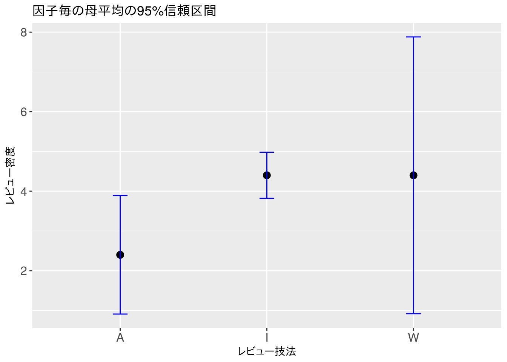
例題 3.2
システム構成の違いがシステムのパフォーマンスにどの程度の影響を与えるのかを調べるために以下のようなデータを収集し、一元配置分散分析を行いました。 システム構成の違いがパフォーマンスに与える影響力は誤差範囲ではないといえるでしょうか。
データの設定
本例題で利用するデータは予めCSVファイルとして保存されているものとします。なお、例題3.1で示したように例題3.2でもフォーマット変換により分析対象となるデータフレームを作成しています。
# 例題のデータを変形せずに読み込み、分析用データフレームに変換する
file <- "./data/ex_3.2.csv"
x <- read.csv(file, header = FALSE, row.names = 1, sep = ",",
fileEncoding = "CP932") %>%
# システム構成の列を行名に設定して転置するのがポイント
t() %>%
as.data.frame() %>%
tidyr::gather(key = sys.config, value = r.time) %>%
mutate(sys.config = as.factor(sys.config))
# mcp{multcomp}では因子型である必要があるため文字列型から変換
df_print(x)データ分布の確認
例題3.1と同じで分散分析aov{stats}を用いるのが適当だと考えますが、念のためにデータ分布の確認を行います。正規性の検定については例題3.1と同じ理由から省略します。
等分散性の確認
bartlett.test(r.time ~ sys.config, data = x)##
## Bartlett test of homogeneity of variances
##
## data: r.time by sys.config
## Bartlett's K-squared = 0.86607, df = 3, p-value = 0.8336一元配置分散分析
帰無仮説は棄却されませんでしたので、対象データは等分散性がないとはいえないために一元配置分散分析aov{stats}を用いて各群（水準）間の平均値の有意差の有無を確認します。
result.aov <- aov(r.time ~ sys.config, data = x)
summary(result.aov)## Df Sum Sq Mean Sq F value Pr(>F)
## sys.config 3 8700 2900 9.667 0.00489 **
## Residuals 8 2400 300
## ---
## Signif. codes: 0 '***' 0.001 '**' 0.01 '*' 0.05 '.' 0.1 ' ' 1多重比較
一元配置分散分析の結果、\(5\%\)有意で帰無仮説は棄却されましたので、多重比較により各群（水準）間に有意差があるのかを確認します。ここでもRcmdrで使われているティキュー・クレーマー法を用います。
# Rcmdr
result.pairs <- multcomp::glht(result.aov,
linfct = multcomp::mcp(sys.config = "Tukey"))
summary(result.pairs)##
## Simultaneous Tests for General Linear Hypotheses
##
## Multiple Comparisons of Means: Tukey Contrasts
##
##
## Fit: aov(formula = r.time ~ sys.config, data = x)
##
## Linear Hypotheses:
## Estimate Std. Error t value Pr(>|t|)
## B - A == 0 50.00 14.14 3.536 0.03138 *
## C - A == 0 30.00 14.14 2.121 0.22514
## D - A == 0 -20.00 14.14 -1.414 0.52529
## C - B == 0 -20.00 14.14 -1.414 0.52524
## D - B == 0 -70.00 14.14 -4.950 0.00491 **
## D - C == 0 -50.00 14.14 -3.536 0.03144 *
## ---
## Signif. codes: 0 '***' 0.001 '**' 0.01 '*' 0.05 '.' 0.1 ' ' 1
## (Adjusted p values reported -- single-step method)# TukeyHSD
result.tukey <- TukeyHSD(result.aov)
result.tukey## Tukey multiple comparisons of means
## 95% family-wise confidence level
##
## Fit: aov(formula = r.time ~ sys.config, data = x)
##
## $sys.config
## diff lwr upr p adj
## B-A 50 4.711904 95.288096 0.0313874
## C-A 30 -15.288096 75.288096 0.2252476
## D-A -20 -65.288096 25.288096 0.5252407
## C-B -20 -65.288096 25.288096 0.5252407
## D-B -70 -115.288096 -24.711904 0.0049175
## D-C -50 -95.288096 -4.711904 0.0313874多重比較の結果、システム構成A-B間、システム構成B-D間、システム構成C-D間に有意差が認められます。
結果の可視化
因子間の平均の差の95%信頼区間は以下の通りとなります。
x.result <- as.data.frame(confint(result.pairs)$confint) %>%
mutate(sys.config = as.factor(row.names(.))) %>%
select(factor = sys.config, lo = lwr, mu = Estimate, up = upr)
ggplot(x.result, aes(x = factor, y = mu)) +
geom_hline(yintercept = 0, linetype = "dashed", colour = "red") +
geom_errorbar(aes(ymin = lo, ymax = up), width = 0.05, colour = "blue") +
geom_point(size = 3) +
xlab("システム構成") + ylab("レスポンスタイムの平均値の差[msec]") +
theme(axis.text = element_text(size = 12)) +
ggtitle("95%信頼区間") +
coord_flip()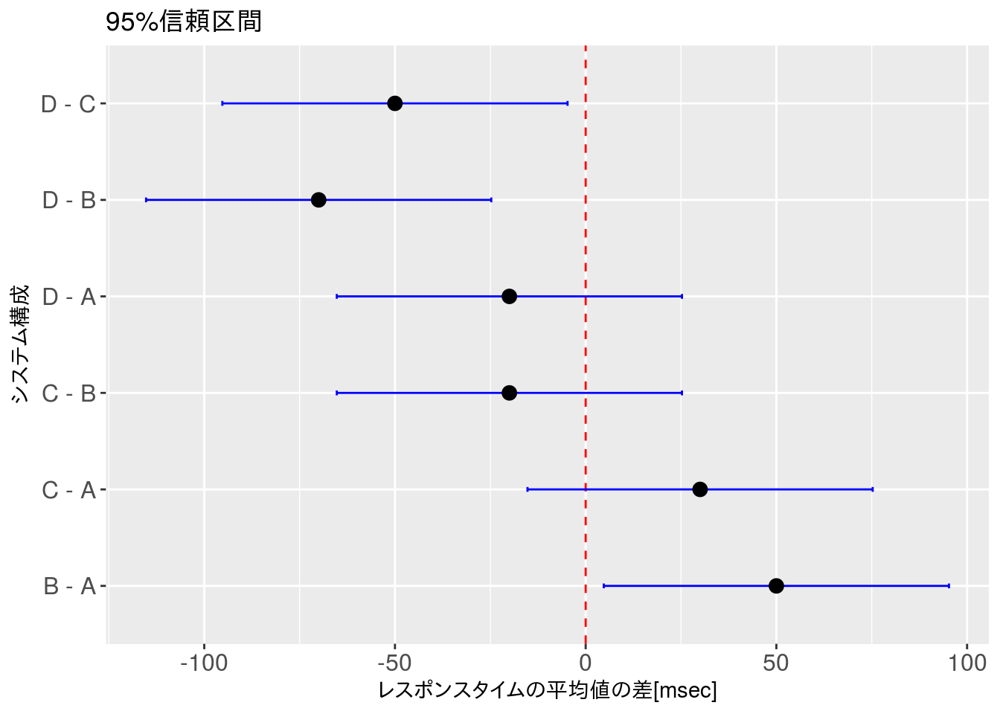
この結果から
- システム構成Aはシステム構成B,Cに比べてレスポンスタイムの平均値が低い
- システム構成Aはシステム構成Dに比べてレスポンスタイムの平均値が高い
- システム構成Dはシステム構成A,B,Cに比べてレスポンスタイムの平均値が低い
となります。単純にレスポンスタイムの平均値だけで決めるのであればシステム構成Dを選択すればよいことになります。しかし、システム構成AとDの平均値の差の95%信頼区間を確認すると必ずもシステム構成Dのレスポンスタイムが短いとは言い切れません。
各群の平均値の95%信頼区間
そこで、各システム構成の平均値の95%信頼区間を確認してみます。
n <- 2
x.result <- x %>%
group_by(sys.config) %>%
summarize(lo = round(t.test(r.time)$conf.int[1], n),
mu = round(t.test(r.time)$estimate, n),
up = round(t.test(r.time)$conf.int[2], n),
num = n())
ggplot(x.result, aes(x = sys.config, y = mu)) +
geom_point(size = 3) +
geom_errorbar(aes(ymin = lo, ymax = up), width = 0.1, colour = "blue") +
xlab("システム構成") + ylab("レスポンスタイムの平均値[msec]") +
theme(axis.text = element_text(size = 12)) +
ggtitle("因子毎の母平均の95%信頼区間")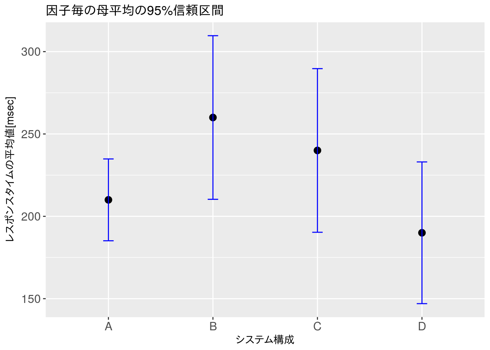
平均値でみるとシステム構成Dの方がレスポンスタイムが短いですが、95%信頼区間を見るとシステム構成Aの方が狭くレスポンスタイムにばらつきがありません。これより
- 安定したレスポンスタイムが求められる場合はシステム構成A
- 全体として短いレスポンスタイムが求められる場合はシステム構成D
という選択ができると考えます。
演習 3.1
完了したプロジェクトを上流でのレビュー実施度合いが、多い、中ぐらい、少ない、の3 段階に分類しました． そして、それらのプロジェクトの最終システムテスト工程での欠陥密度のデータは以下のとおりです。 上流でしっかりとレビューを実施すれば、システムテストでの欠陥密度は低下することが期待できます。 果たして、その期待どおり上流でのレビューは、下流での品質向上に効果があるといえるでしょうか。
データの設定
本演習で利用するデータは予めCSVファイルとして保存されているものとします。
可視化
分析前に対象データを可視化してみます。
x %>%
ggplot(aes(x = review.freq, y = defect.density)) +
geom_boxplot() +
geom_jitter(colour = "red") +
xlab("レビューの実施度合い") + ylab("欠陥密度")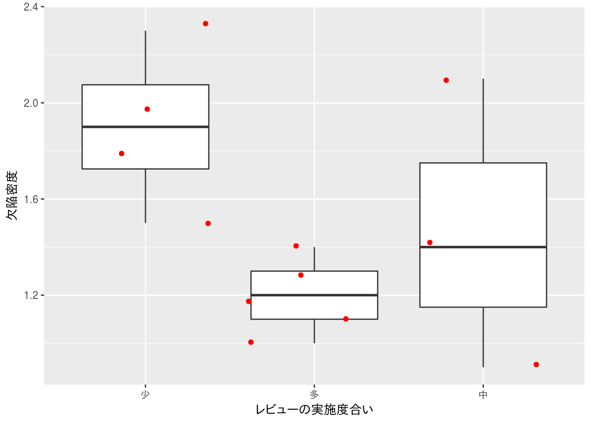
一元配置分散分析
読み込んだデータは上記のように1変数と因子のですので、そのまま分析を行います。
result.aov <- aov(defect.density ~ review.freq, data = x)
summary(result.aov)## Df Sum Sq Mean Sq F value Pr(>F)
## review.freq 2 1.093 0.5467 4.217 0.051 .
## Residuals 9 1.167 0.1296
## ---
## Signif. codes: 0 '***' 0.001 '**' 0.01 '*' 0.05 '.' 0.1 ' ' 1多重比較
一元配置分散分析の結果、\(5\%\)有意で帰無仮説は棄却されませんでしたが、多重比較により因子間に差を確認してみます。
result.pairs <- multcomp::glht(result.aov,
linfct = multcomp::mcp(review.freq = "Tukey"))
summary(result.pairs)##
## Simultaneous Tests for General Linear Hypotheses
##
## Multiple Comparisons of Means: Tukey Contrasts
##
##
## Fit: aov(formula = defect.density ~ review.freq, data = x)
##
## Linear Hypotheses:
## Estimate Std. Error t value Pr(>|t|)
## 多 - 少 == 0 -0.7000 0.2415 -2.898 0.0421 *
## 中 - 少 == 0 -0.4333 0.2750 -1.576 0.3034
## 中 - 多 == 0 0.2667 0.2629 1.014 0.5862
## ---
## Signif. codes: 0 '***' 0.001 '**' 0.01 '*' 0.05 '.' 0.1 ' ' 1
## (Adjusted p values reported -- single-step method)多重比較の結果、一元配置分散分析では有意差は認められなかったもののレビュー頻度’多-小’において有意差が認められます。
結果の可視化
因子間の平均の差の95%信頼区間は以下の通りとなります。
x.result <- as.data.frame(confint(result.pairs)$confint) %>%
mutate(review.freq = as.factor(row.names(.))) %>%
select(factor = review.freq, lo = lwr, mu = Estimate, up = upr)
ggplot(x.result, aes(x = factor, y = mu)) +
geom_point(size = 3) +
geom_errorbar(aes(ymin = lo, ymax = up), width = 0.05, colour = "blue") +
xlab("レビュー頻度") + ylab("レビュー密度の平均値の差") +
theme(axis.text = element_text(size = 12)) +
ggtitle("95%信頼区間") +
coord_flip()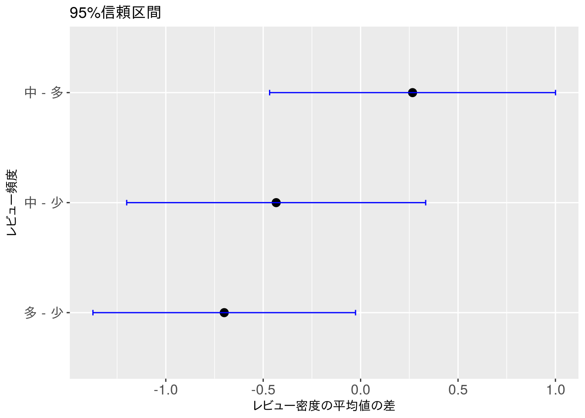
結果の解釈
一元配置分散分析において有意差は認められなかったものの多重比較を行うと有意差が認めれられています。これは、以下のような解釈(定性分析)により有意差は認められないと結論できのではないでしょうか？
定性分析
参考)因子毎の平均値の95%信頼区間
n <- 2
x.result <- x %>%
group_by(review.freq) %>%
summarize(lo = round(t.test(defect.density)$conf.int[1], n),
mu = round(t.test(defect.density)$estimate, n),
up = round(t.test(defect.density)$conf.int[2], n),
num = n())
ggplot(x.result, aes(x = review.freq, y = mu)) +
geom_point(size = 3) +
geom_errorbar(aes(ymin = lo, ymax = up), width = 0.1, colour = "blue") +
xlab("レビューの実施度合い") + ylab("レビュー密度") +
theme(axis.text = element_text(size = 12)) +
ggtitle("因子毎の母平均の95%信頼区間")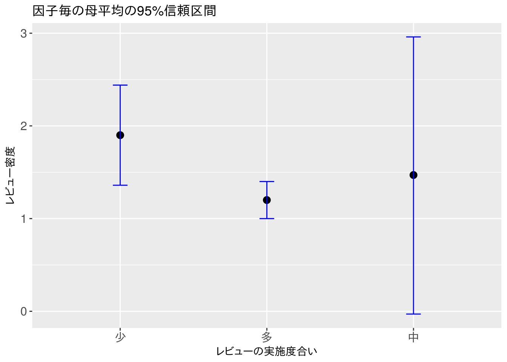
演習 3.2
システムの機能を改良することになりました。GUI プロトタイプの変更案をA、B、C の3 つ作成しました。 現行も加えて4 つのGUI にて5 段階でユーザビリティ評価を行った結果が以下です。 GUI デザインの違いがユーザビリティに影響を与えているといえるでしょうか？また、どのGUI デザインを採用すべきでしょうか？
データの設定
本演習で利用するデータは予めCSVファイルとして保存されているものとします。
# 演習のデータを変形せずに読み込み、分析用データフレームに変換する
file <- "./data/ex3_2.csv"
x <- read.csv(file, header = FALSE, row.names = 1, sep = ",",
fileEncoding = "CP932") %>%
# システム構成の列を行名に設定して転置するのがポイント
t() %>%
as.data.frame() %>%
tidyr::gather(key = model, value = eval) %>%
mutate(model = as.factor(model))
# mcp{multcomp}では因子型である必要があるため文字列型から変換
df_print(x)可視化
分析前に対象データを可視化してみます。
x %>%
ggplot(aes(x = model, y = eval)) +
# geom_violin() +
# geom_boxplot(width = 0.1) +
geom_boxplot() +
# geom_jitter(colour = "blue") +
geom_dotplot(binaxis = "y", stackdir = "center", dotsize = 0.5,
fill = "blue", colour = "blue") +
stat_summary(fun.y = mean, geom = "point", shape = 18, size = 3,
color = "red") +
xlab("GUIデザイン") + ylab("評価結果(5段階)")## `stat_bindot()` using `bins = 30`. Pick better value with `binwidth`.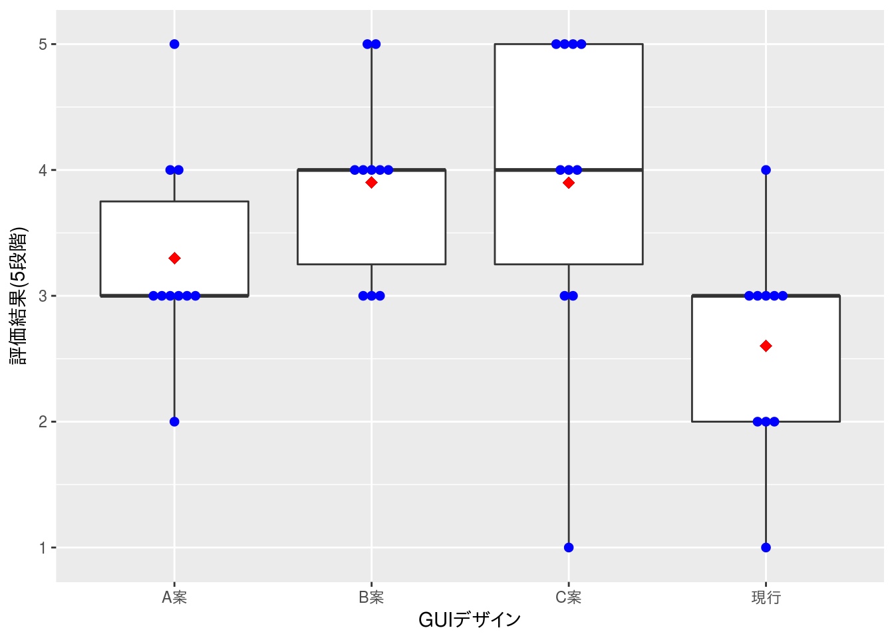
x %>%
ggplot(aes(x = eval, fill = model)) +
geom_histogram(binwidth = 1, alpha = 0.5) +
facet_wrap(~ model) +
xlab("評価結果(5段階)") + ylab("度数")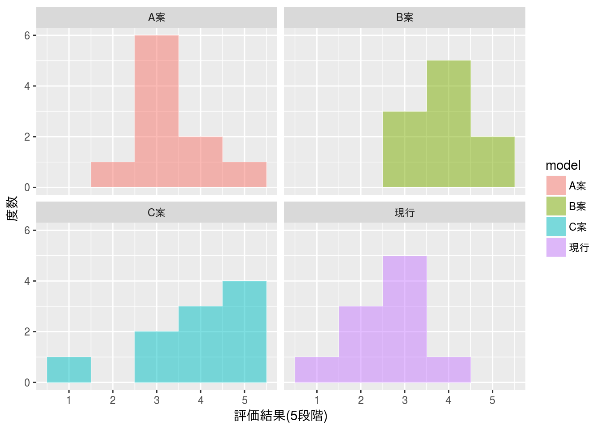
現行案に対して、A, B, Cの各案とも評価結果が良くなっていることの見当はつきますが、どの案がベストなのか、本当に良くなっているかは、グラフだけでは断言できません。
一元配置分散分析
そこで、一元配置分散分析を行うことで、各案の評価に有意な差があるか確認します。
result.aov <- aov(eval ~ model, data = x)
summary(result.aov)## Df Sum Sq Mean Sq F value Pr(>F)
## model 3 11.48 3.825 4.263 0.0112 *
## Residuals 36 32.30 0.897
## ---
## Signif. codes: 0 '***' 0.001 '**' 0.01 '*' 0.05 '.' 0.1 ' ' 1一元配置分散分析の結果、\(5\%\)有意で帰無仮説は棄却されましたので、因子間に有意な差があることが分かります。
多重比較
そこで、多重比較によりどの因子間に有意差があるのかを確認します。
result.pairs <- multcomp::glht(result.aov,
linfct = multcomp::mcp(model = "Tukey"))
summary(result.pairs)##
## Simultaneous Tests for General Linear Hypotheses
##
## Multiple Comparisons of Means: Tukey Contrasts
##
##
## Fit: aov(formula = eval ~ model, data = x)
##
## Linear Hypotheses:
## Estimate Std. Error t value Pr(>|t|)
## B案 - A案 == 0 6.000e-01 4.236e-01 1.416 0.4976
## C案 - A案 == 0 6.000e-01 4.236e-01 1.416 0.4976
## 現行 - A案 == 0 -7.000e-01 4.236e-01 -1.652 0.3631
## C案 - B案 == 0 -1.221e-15 4.236e-01 0.000 1.0000
## 現行 - B案 == 0 -1.300e+00 4.236e-01 -3.069 0.0203 *
## 現行 - C案 == 0 -1.300e+00 4.236e-01 -3.069 0.0203 *
## ---
## Signif. codes: 0 '***' 0.001 '**' 0.01 '*' 0.05 '.' 0.1 ' ' 1
## (Adjusted p values reported -- single-step method)多重比較の結果、現行のGUIとB案、C案との間で有意な差が認められます。
結果の可視化
多重比較の結果である因子間の平均の差の95%信頼区間は以下の通りになります。
x.result <- as.data.frame(confint(result.pairs)$confint) %>%
mutate(model = as.factor(row.names(.))) %>%
select(factor = model, lo = lwr, mu = Estimate, up = upr)
ggplot(x.result, aes(x = factor, y = mu)) +
geom_point(size = 3) +
geom_errorbar(aes(ymin = lo, ymax = up), width = 0.05, colour = "blue") +
xlab("GUIデザイン") + ylab("5段階評価結果の平均の差") +
theme(axis.text = element_text(size = 12)) +
ggtitle("95%信頼区間") +
coord_flip()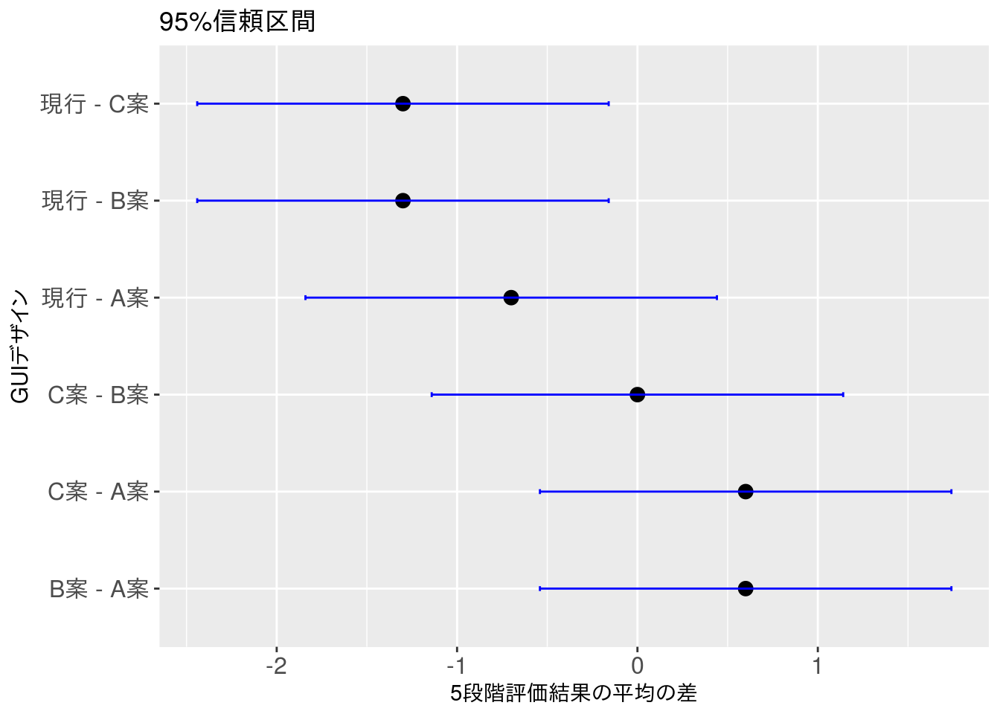
ただ、これだけでは、B案とC案のどちらを選べば良いか、数値だけでは判断がつきません。
因子毎の平均値の95%信頼区間
そこで、始めに戻り各因子(GUIデザイン)の評価結果の平均値と95%信頼区間を見てみます。
n <- 2
x.result <- x %>%
group_by(model) %>%
summarize(lo = round(t.test(eval)$conf.int[1], n),
mu = round(t.test(eval)$estimate, n),
up = round(t.test(eval)$conf.int[2], n),
num = n())
ggplot(x.result, aes(x = model, y = mu)) +
geom_point(size = 3) +
geom_errorbar(aes(ymin = lo, ymax = up), width = 0.1, colour = "blue") +
xlab("プロトタイプ") + ylab("5段階評価値") +
theme(axis.text = element_text(size = 12)) +
ggtitle("因子毎の母平均の95%信頼区間")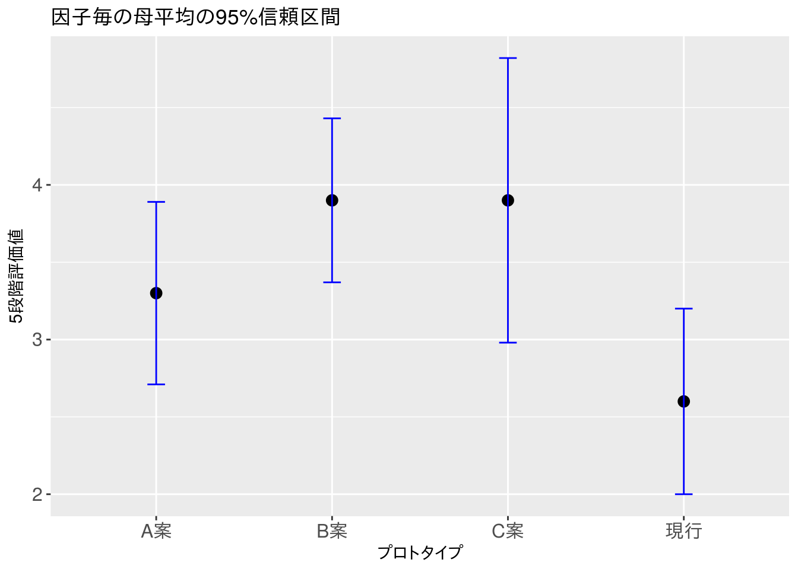
これを見るとC案の評価はB案の評価と比べると評価が散らばっていることが分かります。言い換えるとC案の平均的な評価はB案と同等ですが、人により好き嫌いが別れると言えます。したがって、今回はより万人受けするB案を採用することを推奨することとします。
演習 3.3
システム構成の違いとソフトウェア設定のどちらがシステムのパフォーマンスに影響を与えるのかを調べるためにそれぞれ4水準と3水準を用意して全組合せでパフォーマンステストを行い、以下のようなデータを収集しました。 システム構成の違いとソフトウェア設定のどちらがパフォーマンスに与えるといえるでしょうか？ 二元配置分散分析を行ってください。
データの設定
本演習で利用するデータは予めCSVファイルとして保存されているものとします。
可視化
分析前に対象データを可視化してみます。
x %>%
ggplot(aes(x = system, y = r.time)) +
geom_boxplot() +
geom_jitter(colour = "red") +
xlab("システム構成") + ylab("レスポンス時間[msec]")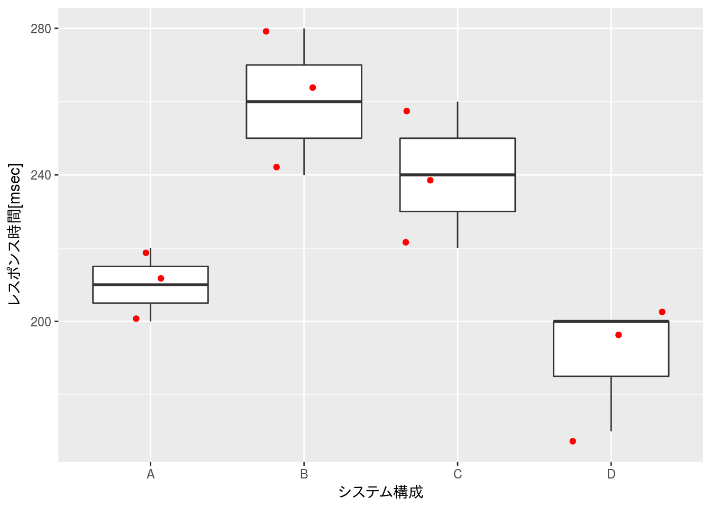
システム構成に着目すると構成Aと構成Dが優れているように見えます。
x %>%
ggplot(aes(x = software, y = r.time)) +
geom_boxplot() +
geom_jitter(colour = "red") +
xlab("ソフトウェア設定") + ylab("レスポンス時間[msec]")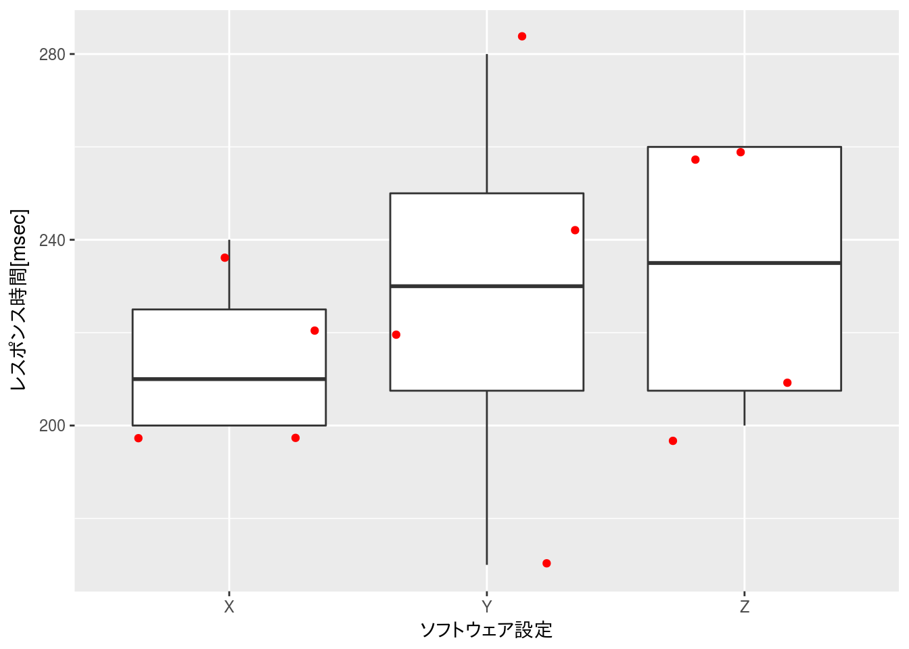
一方、ソフトウェア設定に着目すると設定Xが他の設定に比べると優れているように見えますが、どちらのシステム構成との組み合わせが良いのかはグラフからは判断できません。
二元配置分散分析
そこで、二元配置の分散分析を行ってみます。
result.aov <- aov(r.time ~ system + software, data = x)
summary(result.aov)## Df Sum Sq Mean Sq F value Pr(>F)
## system 3 8700 2900.0 9.943 0.0096 **
## software 2 650 325.0 1.114 0.3877
## Residuals 6 1750 291.7
## ---
## Signif. codes: 0 '***' 0.001 '**' 0.01 '*' 0.05 '.' 0.1 ' ' 1二元配置分散分析の結果、システム構成に対しては\(5\%\)有意で帰無仮説が棄却されていますが、ソフトウェア設定に対しては帰無仮説が棄却されていないことが分かります。
多重比較
そこで、二元配置分散分析の結果、システム構成に対する多重比較を行いどの因子間に有意差があるのかを確認します。
result.pairs <- multcomp::glht(result.aov,
linfct = multcomp::mcp(system = "Tukey"))
summary(result.pairs)##
## Simultaneous Tests for General Linear Hypotheses
##
## Multiple Comparisons of Means: Tukey Contrasts
##
##
## Fit: aov(formula = r.time ~ system + software, data = x)
##
## Linear Hypotheses:
## Estimate Std. Error t value Pr(>|t|)
## B - A == 0 50.00 13.94 3.586 0.04332 *
## C - A == 0 30.00 13.94 2.151 0.23862
## D - A == 0 -20.00 13.94 -1.434 0.52479
## C - B == 0 -20.00 13.94 -1.434 0.52479
## D - B == 0 -70.00 13.94 -5.020 0.00951 **
## D - C == 0 -50.00 13.94 -3.586 0.04356 *
## ---
## Signif. codes: 0 '***' 0.001 '**' 0.01 '*' 0.05 '.' 0.1 ' ' 1
## (Adjusted p values reported -- single-step method)結果の可視化
因子間の平均の差の95%信頼区間は以下の通りとなります。
x.result <- as.data.frame(confint(result.pairs)$confint) %>%
mutate(system = as.factor(row.names(.))) %>%
select(factor = system, lo = lwr, mu = Estimate, up = upr)
ggplot(x.result, aes(x = factor, y = mu)) +
geom_point(size = 3) +
geom_errorbar(aes(ymin = lo, ymax = up), width = 0.05, colour = "blue") +
xlab("システム構成") + ylab("レスポンスタイムの平均値の差[msec]") +
theme(axis.text = element_text(size = 12)) +
ggtitle("95%信頼区間") +
coord_flip()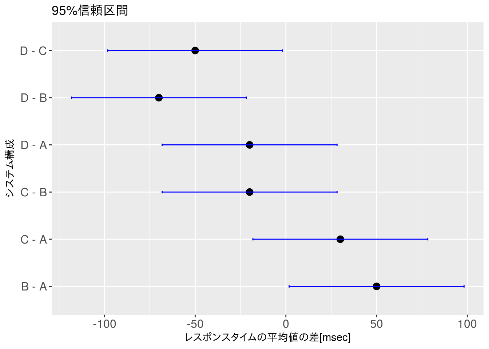
この結果から
- システム構成Aはシステム構成B,Cに比べてレスポンスタイムの平均値が低い
- システム構成Aはシステム構成Dに比べてレスポンスタイムの平均値が高い
- システム構成Dはシステム構成A,B,Cに比べてレスポンスタイムの平均値が低い
となります。単純にレスポンスタイムの平均値だけで決めるのであればシステム構成Dを選択すればよいことになります。しかし、システム構成AとDの平均値の差の95%信頼区間を確認すると必ずもシステム構成Dのレスポンスタイムが短いとは言い切れません。
因子毎の平均値の95%信頼区間
そこで、各システム構成の平均値の95%信頼区間を確認してみます。
n <- 2
x.result <- x %>%
group_by(system) %>%
summarize(lo = round(t.test(r.time)$conf.int[1], n),
mu = round(t.test(r.time)$estimate, n),
up = round(t.test(r.time)$conf.int[2], n),
num = n())
ggplot(x.result, aes(x = system, y = mu)) +
geom_point(size = 3) +
geom_errorbar(aes(ymin = lo, ymax = up), width = 0.1, colour = "blue") +
xlab("システム構成") + ylab("5段階評価値") +
theme(axis.text = element_text(size = 12)) +
ggtitle("因子毎の母平均の95%信頼区間")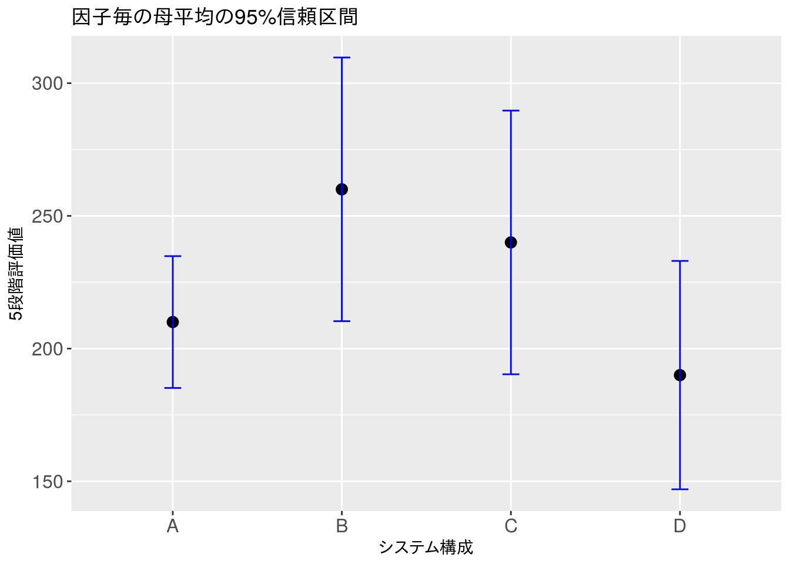
平均値でみるとシステム構成Dの方がレスポンスタイムが短いですが、95%信頼区間を見るとシステム構成Aの方が狭くレスポンスタイムにばらつきがありません。これより
- 安定したレスポンスタイムが求められる場合はシステム構成A
- 全体として短いレスポンスタイムが求められる場合はシステム構成D
という選択ができると考えます。
参考)多重比較
二元配置分散分析の結果、ソフトウェアに対しては\(5\%\)有意で帰無仮説は棄却されなかったが、多重比較により因子間の差を確認してみます。
result.pairs <- multcomp::glht(result.aov,
linfct = multcomp::mcp(software = "Tukey"))
summary(result.pairs)##
## Simultaneous Tests for General Linear Hypotheses
##
## Multiple Comparisons of Means: Tukey Contrasts
##
##
## Fit: aov(formula = r.time ~ system + software, data = x)
##
## Linear Hypotheses:
## Estimate Std. Error t value Pr(>|t|)
## Y - X == 0 12.50 12.08 1.035 0.584
## Z - X == 0 17.50 12.08 1.449 0.377
## Z - Y == 0 5.00 12.08 0.414 0.911
## (Adjusted p values reported -- single-step method)x.result <- as.data.frame(confint(result.pairs)$confint) %>%
mutate(software = as.factor(row.names(.))) %>%
select(factor = software, lo = lwr, mu = Estimate, up = upr)
ggplot(x.result, aes(x = factor, y = mu)) +
geom_point(size = 3) +
geom_errorbar(aes(ymin = lo, ymax = up), width = 0.05, colour = "blue") +
xlab("ソフトウェア設定") + ylab("レスポンスタイムの平均値の差[msec]") +
theme(axis.text = element_text(size = 12)) +
ggtitle("95%信頼区間") +
coord_flip()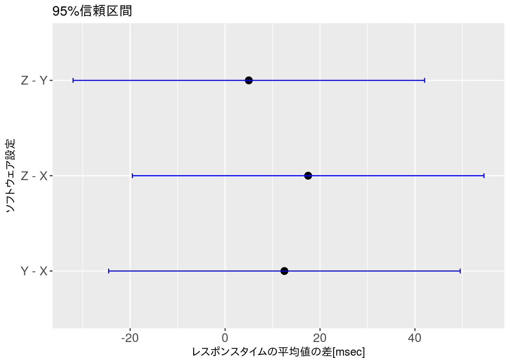
演習 3.4
以下に前著『データ指向のソフトウェア品質マネジメント』の3.2節で取り扱っているリリース後の品質問題が「なし」と「あり」の2つの群に分けた各プロジェクトのシステムテストでの欠陥密度のデータを掲載しています。 品質問題の「なし」のほうが「あり」よりも明らかに欠陥密度が小さいことを見出せれば、このメトリクスでリリース後の品質をある程度予見できることになります。 そうすれば、システムテストでの欠陥密度がリリース判定材料の一つとして活用できます。
このデータを使って、まずは分散比のF検定を行って、2つの群の分散が等しいとみなせるかの確認を行い、その結果にもとづいて、2群の母平均の差のt検定を適切なオプション指定で実施してください。
データの設定
本演習で利用するデータは予めCSVファイルとして保存されているものとします。
可視化
分析前に対象データを可視化してみます。
x %>%
tidyr::gather(value = defect.density) %>%
na.omit() %>%
ggplot(aes(x = key, y = defect.density)) +
geom_boxplot() +
geom_jitter(colour = "red") +
xlab("品質問題の有無") + ylab("欠陥密度")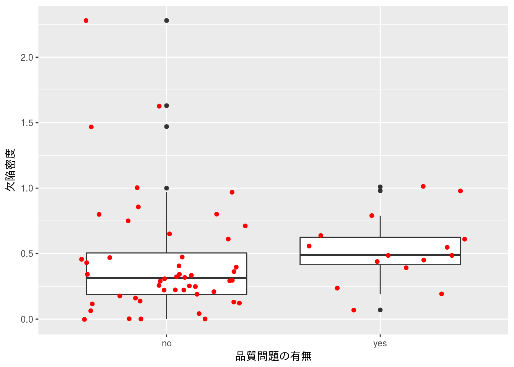
x %>%
tidyr::gather(value = defect.density) %>%
na.omit() %>%
ggplot(aes(x = defect.density, fill = key)) +
geom_histogram(binwidth = 0.5, alpha = 0.5) +
facet_wrap(~ key) +
xlab("欠陥密度") + ylab("度数")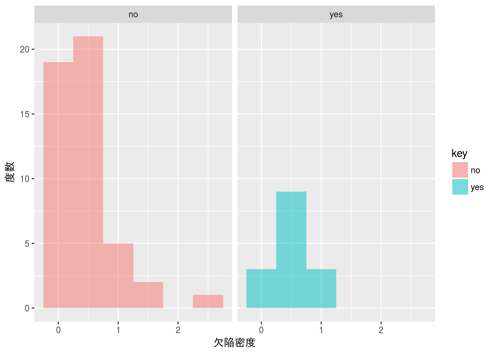
検定
result.var.test <- var.test(x$no, x$yes)
result.var.test##
## F test to compare two variances
##
## data: x$no and x$yes
## F = 2.8502, num df = 47, denom df = 14, p-value = 0.03591
## alternative hypothesis: true ratio of variances is not equal to 1
## 95 percent confidence interval:
## 1.076490 6.152851
## sample estimates:
## ratio of variances
## 2.850151if(result.var.test$p.value < 0.05){
# 帰無仮説が棄却される(不等分散)
t.test(x$no, x$yes, alternative = "less", paired = FALSE,
var.equal = FALSE)
} else {
# 帰無仮説が棄却されない(等分散と見なせる)
t.test(x$no, x$yes, alternative = "less", paired = FALSE,
var.equal = TRUE)
}##
## Welch Two Sample t-test
##
## data: x$no and x$yes
## t = -0.92355, df = 40.48, p-value = 0.1806
## alternative hypothesis: true difference in means is less than 0
## 95 percent confidence interval:
## -Inf 0.07096076
## sample estimates:
## mean of x mean of y
## 0.4404167 0.5266667一元配置分散分析
一元配置の分散分析でも行ってみます。
result.aov <- x %>%
tidyr::gather(value = defect.density) %>%
na.omit() %>%
mutate(key = as.factor(key)) %>%
aov(defect.density ~ key, data = .)
summary(result.aov)## Df Sum Sq Mean Sq F value Pr(>F)
## key 1 0.085 0.08502 0.507 0.479
## Residuals 61 10.238 0.16783result.pairs <- multcomp::glht(result.aov,
linfct = multcomp::mcp(key = "Tukey"))
summary(result.pairs)##
## Simultaneous Tests for General Linear Hypotheses
##
## Multiple Comparisons of Means: Tukey Contrasts
##
##
## Fit: aov(formula = defect.density ~ key, data = .)
##
## Linear Hypotheses:
## Estimate Std. Error t value Pr(>|t|)
## yes - no == 0 0.08625 0.12118 0.712 0.479
## (Adjusted p values reported -- single-step method)x.result <- as.data.frame(confint(result.pairs)$confint) %>%
mutate(system = as.factor(row.names(.))) %>%
select(factor = system, lo = lwr, mu = Estimate, up = upr)
ggplot(x.result, aes(x = factor, y = mu)) +
geom_point(size = 3) +
geom_errorbar(aes(ymin = lo, ymax = up), width = 0.05, colour = "blue") +
xlab("品質問題の有無") + ylab("欠陥密度") +
theme(axis.text = element_text(size = 12)) +
ggtitle("95%信頼区間") +
coord_flip()
演習 3.5
31プロジェクトの数値データ、カテゴリデータがあります。このデータを使って、カテゴリデータのいずれが、欠陥密度（Defects/KLOC）に強い影響を与えているかを調べてください。 そして、分析結果から欠陥密度を下げるには、どのような改善策が考えられるかを考察してください。
データ説明 各行が１プロジェクトごとのデータとなります。31プロジェクト分のデータが有ります。ただし、全ての項目が入力されている訳ではなく、所々に欠損値が有ります。
データの設定
本演習で利用するデータは予めCSVファイルとして保存されているものとします。
一元配置分散分析
一元配置の分散分析により各因子の有意差を確認します。
factor <- colnames(x)[5:31]
result.aov <- NULL
for(i in factor){
result.aov <- x %>%
aov(defect.density ~ x[[i]], data = .) %>%
anova() %>%
as.data.frame() %>%
na.omit() %>%
mutate(factor = i) %>%
bind_rows(result.aov, .)
}
result.aovresult <- result.aov %>%
select(factor, p.value = 5) %>%
filter(p.value < 0.05)
result可視化
p値が0.05未満のデータを可視化してみます。
for(i in result$factor){
graph <- x %>%
ggplot(aes(x = x[[i]], y = defect.density)) +
geom_boxplot() +
geom_jitter(colour = "red") +
xlab(i) + ylab("欠陥密度")
print(graph)
}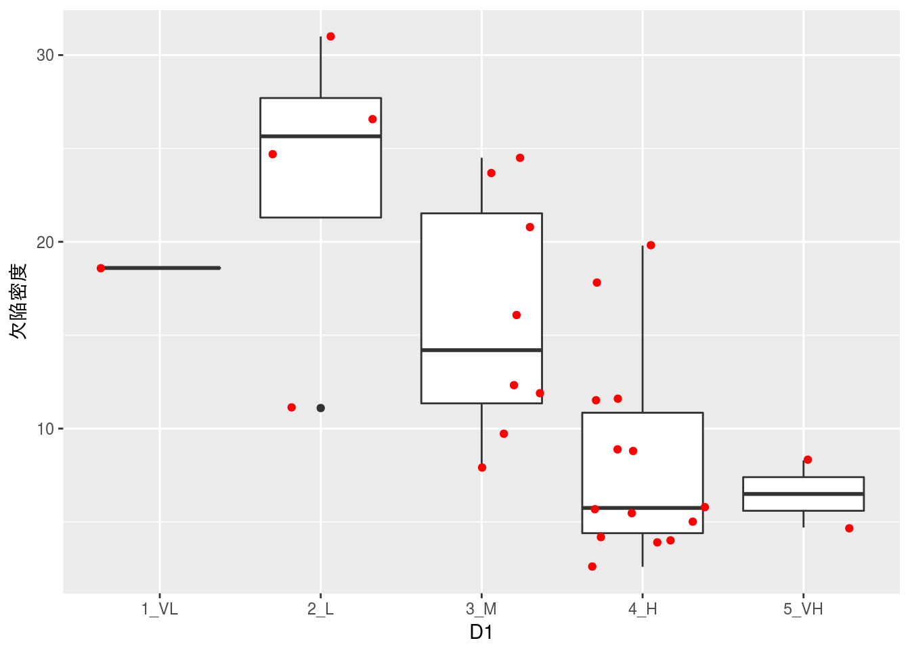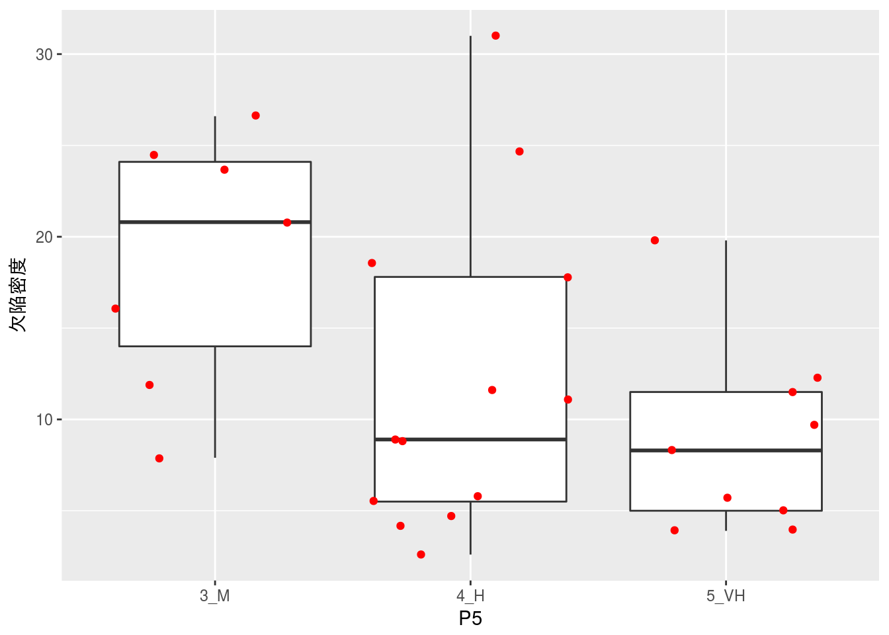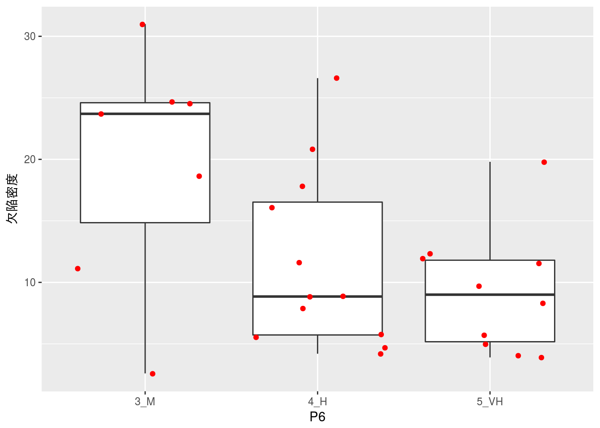
参考)生産性の場合
factor <- colnames(x)[5:31]
result.aov <- NULL
for(i in factor){
result.aov <- x %>%
aov(productivity ~ x[[i]], data = .) %>%
anova() %>%
as.data.frame() %>%
na.omit() %>%
mutate(factor = i) %>%
bind_rows(result.aov, .)
}
result.aovresult.aov %>%
select(factor, p.value = 5) %>%
filter(p.value < 0.05) CC BY-NC-SA 4.0 , Sampo Suzuki [2018-03-17 15:26(JST)]
CC BY-NC-SA 4.0 , Sampo Suzuki [2018-03-17 15:26(JST)]